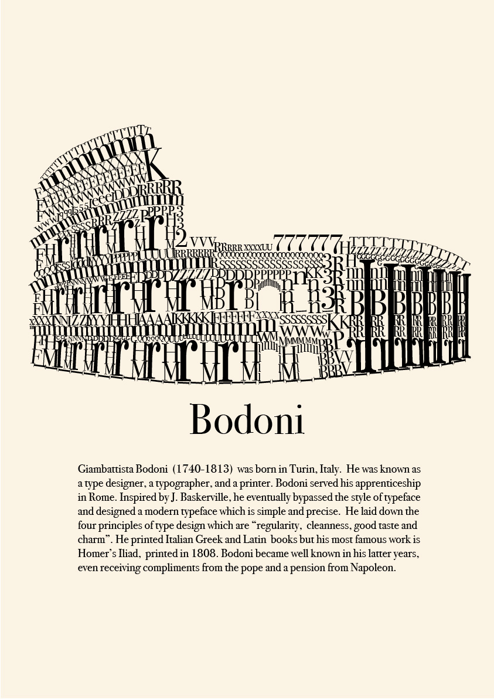

The Brief
The brief was to research a typeface and design a typography poster. The poster had to include information on the font and the typographer of our choice.
The Process and Idea
I chose Bodoni, a late eighteenth century typographer and printer. He was born in Italy and studied in Rome. So I decided to create the Colesseum in Rome using his serif typeface. This involved several hours of placing the letters of the alphabet and numbers into the design.
The Result
The finished poster showcased the typeface with a brief synopsis about Bodoni and his life.
